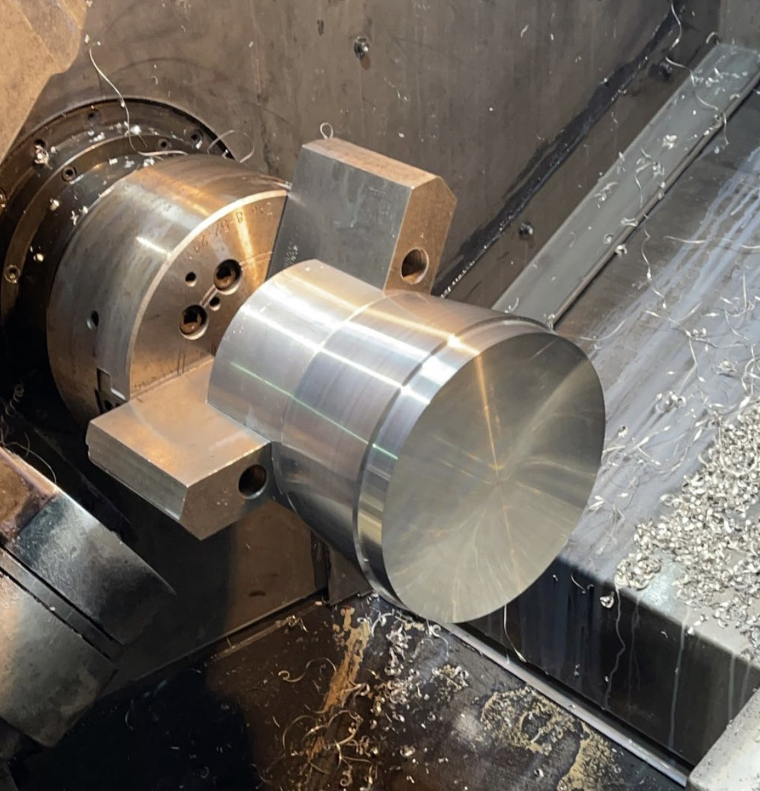
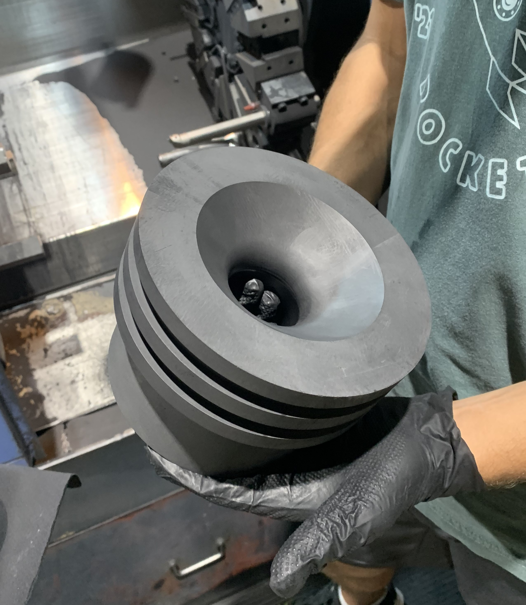

Results
Below I have included a few key final statistics of the completed and launched rocket as to give a quick summary and set the scale.
The Goddard and final year of the program, students are tasked with designing a rocket that can carry a 5lb payload to world-record breaking altitude of 50,000 feet with a given budget of 10,000 dollars.
Below I have included a few key final statistics of the completed and launched rocket as to give a quick summary and set the scale.
The first picture displays the complete rocket ready to fire on the rail. From left to right we can see the carbon fiber wrapped combustion chamber where the solid fuel (ABS) is housed, the aluminum oxidizer tank which hold the liquid oxidizer (Nitrous), and the fiberglass forebody (both the green bodytube and balck nose cone) where the instrumentation, avionics, recovery, and payload are housed. In the second or post flight picture on the top row the green body tube from the forebody and the aluminum oxidizer tank can be seen, and in the bottom row the carbon fiber wrapper combustion chamber. Unfortunately the nose cone was unable to be recovered due to the shock cord breaking allowing the parachute and nose cone to drift away. The damage seen in the post flight photo can also be attributed to the shock cord breaking, however, the damage was minimal given the rocket had to withstand roughly a 45,000 foot fall.
My roles this year, just as the last two projects, were the avionics lead and lead engineer of the project, however, given the size of the project my responsibilities as the Lead Engineer grew dramatically compared to previous years. Instead of placing a big focus on solely avionics I spread it over every component and designed parts pertaining to every sections of the rocket. In addition, I was also in charge of finding, communicating with, and updating sponsors, setting up info-sessions for CAD, CNC, and other softwares, understanding the CNC lathes and mills need to make our parts managing a 5-figure budget (10,000 dollar), and filling out the required paperwork for the team, school, System's Go, and making sure everyone on the team has filled out the personal documents allowing us to launch on White Sands Military Base. In the following sections I have detailed some of the major component which I designed.
Just like the Oberth rocket this project also required a math model, however as this year a requirement is to build our own hybrid engine there was a larger depth to this math model. I have included a link to view an earlier stage math model for the project below, the final model is having trouble opening which I will attach as soon as I figure out the issue. Below are some key variable parameters and assumptions that were made in the model.
_____
Early in the year I began learning how to CAD and CNC in Solidworks as our sponsor's (Da Vinci Maker Labs) machines take the GCode directly from Solidworks software. While I did help in the CAD my main job was understanding how to set up and operate the CNC lathe and mill.
 